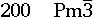
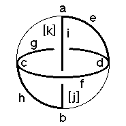
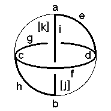

Underlying Topological Space: D3; Figure Pseudo-Symmetry (FPS): 2/m
Euclidean 3-Orbifold with Invariant-Lattice-Complex Letters
(left), Wyckoff Site Letters (right)
 

| FPS | Mult | Lattice Comp | Group Graph | Wyckoff Set | 2[4]Cover |
| 1-2 | P | 32' | a, b | ||
| 3-2 | J | 2'2'2' | c, d | ||
| 6-2 | P6[-]J2 | 3<2'>2'2' | e:a-d, h:b-c | ||
| 6-2 | J2[W]J2 | 2'2'<2'>2'2' | (f:d-c)1, (g:d-c)2 | ||
| 8-1 | P8[P2]P8 | 2'<3>2' | (i:a-b)3 | ||
| 12-2 | m | j:efg, k:fgh | |||
| 24 | 1 | l:i,jk | |||
| 12-2 | P12[-]J4 | 2*=32'<1'>2'2'2' | j1:a-c, k1:b-d | #221(i,j) | |
| 2 | 24-2 | W4[-]P23 | 2*=2'2'<1>33 | l1:f-i, l2:g-i | #223(j) |
| m | 24-1 | m* | (l3:ehi)4 | #221(m) | |
| Struct-Mult | Critical Points | Heegaard Surf | Wyckoff Cut |
| Scub-1s | P/J/J/P | H 3m{2'2'} | g i f j k |
 199
199 201
201 Orbifold Atlas Home Page
Orbifold Atlas Home Page Crystallographic Topology Home Page
Crystallographic Topology Home Page